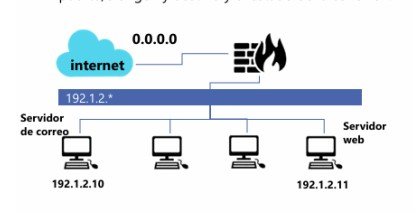

MECANISMOS DE DEFENSA EN RED.
Iptables es una herramienta esencial en Linux para gestionar el tráfico de red mediante reglas que
permiten o deniegan el paso de paquetes.
¿Qué es Iptables?
Iptables es un sistema de firewall integrado en el kernel de Linux que permite a los
administradores gestionar y controlar el tráfico de red. Funciona mediante la creación de reglas
que determinan cómo se deben tratar los paquetes de datos entrantes, salientes y reenviados.

1. Establecer una política restrictiva
iptables -P INPUT DROP
iptables -P OUTPUT DROP
iptables -P FORWARD DROP
``
-P: nos dice que política se usara INPUT, OUTPUT, FORWARD
INPUT: tráfico que entra
OUTPUT: tráfico que sale
FORWARD: tráfico que cruza el firewall
DRIP: descarta el paquete
2. Permitir el tráfico de conexiones ya establecidas
iptables -A INPUT -m state --state ESTABLISHED, RELATED -j ACCEPT
iptables -A OUTPUT -m state --state ESTABLISHED, RELATED -j ACCEPT
-A: agrega una regla al final de la cadena
INPUT, OUTPUT: para tráfico de entrada o salida
-m state: el mudulo state se usa para seguimiento de conexiones
--state ESTABLISHED, RELATED: permite tráfico de conexiones ya establecidas o
relacionadas
-j ACCEPT: permite la acción
3. Aceptar tráfico DNS (TCP) saliente de la red local.
iptables -A FORWARD -s 192.1.2.0/24 -p tcp --dport 53 -m state --state NEW -j ACCEPT
-A FORWARD: tráfico que cruza el firewall
-s 192.1.2.0/24: definimos el origen /red local
-p tcp: definimos el protocolo a usar
--dport 53: seleccionamos el puerto de destino
-m state –state NEW: para conexiones nuevas entrantes
4. Aceptar correo entrante proveniente de Internet en el servidor de correo.
iptables -A FORWARD -p tcp -d 192.1.2.10 --dport 25 -m state --state NEW -j ACCEPT
-A FORWARD: tráfico que cruza el firewall
-p tcp: definimos el protocolo a usar
-d 192.1.2.10: definimos el destino del correo
5. Permitir correo saliente a Internet desde el servidor de correo.
iptables -A FORWARD -p tcp -s 192.1.2.10 --dport 25 -m state --state NEW -j ACCEPT
-s 192.1.2.10: definimos la fuente
--dport 25: puerto 25 como destino (internet)
6. Aceptar conexiones HTTP desde Internet a nuestro servidor web.
iptables -A FORWARD -p tcp -d 192.1.2.11 --dport 80 -m state --state NEW -j ACCEPT
-d 192.1.2.11: servidor web de destino
--dport 80: puerto HTTP de destino
7. Permitir tráfico HTTP desde la red local a Internet
iptables -A FORWARD -s 192.1.2.0/24 -p tcp --dport 80 -m state --state NEW -j ACCEPT
-s 192.1.2.0/24: se define la LAN de origen
--dport 80: puerto HTTP de destino
Conclusiones
Configurar un firewall usando iptables nos permite proteger la red al aplicar ciertas políticas restrictivas que autorizaran el trafico necesario como puede ser el permitir solo conexiones que ya se habían establecido lo cual podría controlar el riesgo de ataques con accesos no autorizados y asegurando un control adecuado del tráfico entre la red local e internet.
Referencias
De Luz, S. (2025, January 30). Configura el firewall de Linux con IPtables y protege tu servidor. RedesZone. https://www.redeszone.net/tutoriales/seguridad/iptables-firewall-linuxconfiguracion/